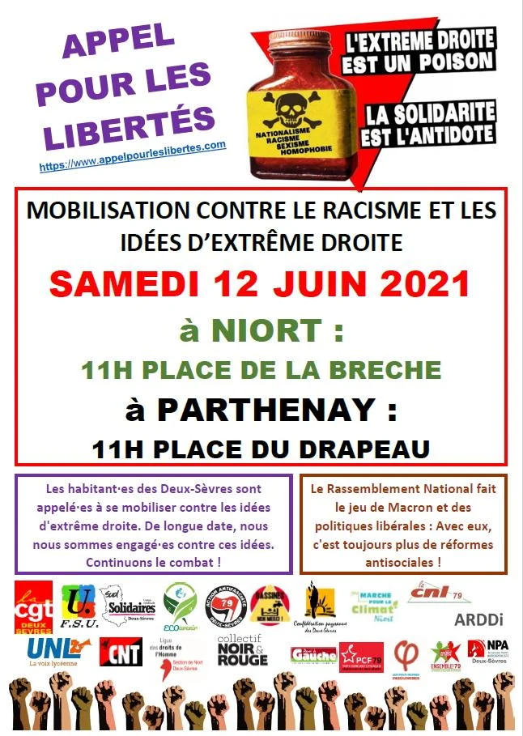

Appel archivé
Niort. L’appel du 12 juin pour les libertés et contre le racisme
Date indiquée par Facebook · 8 juin 2021
Repères éditoriaux
Nous avons appelé à marcher à Niort pour les libertés et contre les idées d’extrême droite. Le compte rendu rend visible la mobilisation.
Texte conservé avec la publication
Le samedi 12 Juin, Marchons contre le racisme et les idées d'extrême-droite et pour nos libertés !
A Niort, à 11 heures Place de la Brèche
A Parthenay, à 11 heures Place du Drapeau

Sources
Archive rouge · export Facebook · AR-0002-FB-02028
À lire aussi · Le 12 juin à Niort, des centaines de personnes pour les libertés